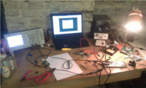
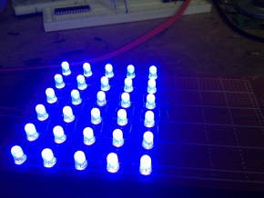

ProjectListSandbox
From base48
Revision as of 20:15, 14 March 2012 by
Evilissimo
(
talk
|
contribs
)
(
diff
)
← Older revision
| Latest revision (diff) | Newer revision → (diff)
Jump to:
navigation
,
search
Project
Description
Contributors
Status
Last Modified
Tags
Sandbox Project

Founder:
Foo#Bar
Coops:
Baz,Foobar,...
Latest Version:
0.1.1
Operating
System(s):
Windows,Linux,Unix
Architecture(s):
x86,x86_64
Programming
Language(s):
C,C++,Assembler,Python
SW License:
LGPL v2.1
HW License:
MIT
github:
github repository
Status:
Idea
Created:
2012-03-13
Last Modified:
{{#REVISIONYEAR:ProjectSandbox}}-{{#REVISIONMONTH2:ProjectSandbox}}-{{#REVISIONDAY:ProjectSandbox}}
Skeleton
Founder:
evilissimo
Status:
closed
Created:
2012-03-14
Last Modified:
{{#REVISIONYEAR:Skeleton}}-{{#REVISIONMONTH2:Skeleton}}-{{#REVISIONDAY:Skeleton}}
UV exposure

Founder:
hexo
Coops:
rmarko
Status:
active
Created:
2012-03-06
Last Modified:
{{#REVISIONYEAR:Uvexp}}-{{#REVISIONMONTH2:Uvexp}}-{{#REVISIONDAY:Uvexp}}
STM32F4DISOVERY
Founder:
hexo
Status:
active
Created:
2012-03-06
Last Modified:
{{#REVISIONYEAR:Stm32f4-discovery}}-{{#REVISIONMONTH2:Stm32f4-discovery}}-{{#REVISIONDAY:Stm32f4-discovery}}
Navigation menu
Personal tools
Create account
Log in
Namespaces
Page
Discussion
Variants
Views
Read
View source
View history
More
Search
Navigation
Main page
Community portal
Current events
Recent changes
Random page
Help
Organization
Join us
Space
About
Meetings
Equipment
Tools
What links here
Related changes
Special pages
Printable version
Permanent link
Page information
Browse properties

{kind=link}
{kind=link}